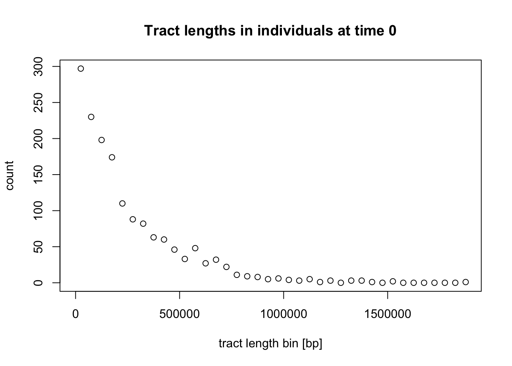
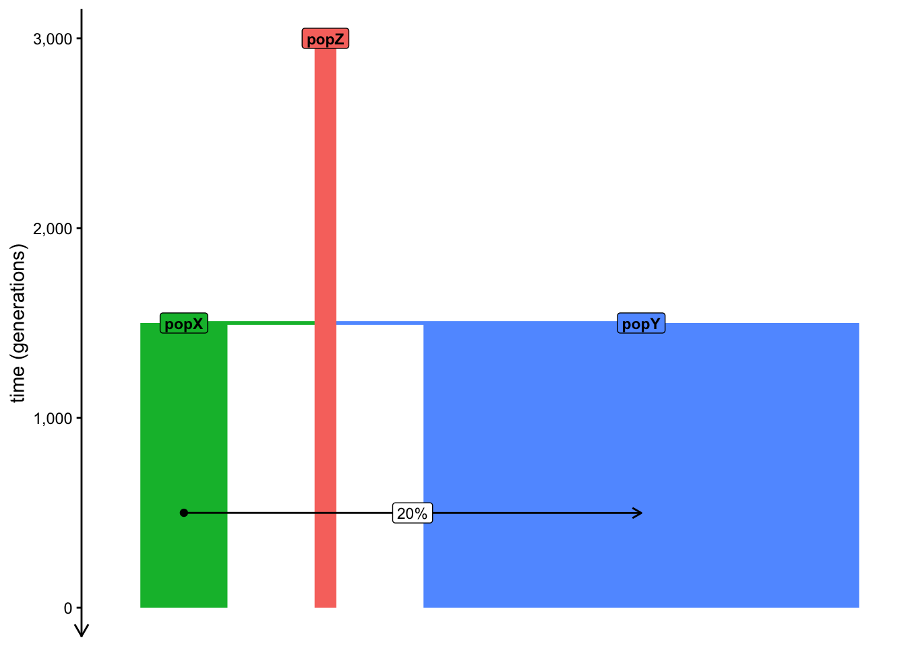

##################################################
# simple admixture demographic model
library(slendr)
init_env()
popZ <- population("popZ", time = 3000, N = 500)
popX <- population("popX", time = 1500, N = 2000, parent = popZ)
popY <- population("popY", time = 1500, N = 10000, parent = popZ)
gf <- gene_flow(from = popX, to = popY, proportion = 0.2, start = 500, end = 499)
model <- compile_model(list(popZ, popX, popY), generation_time = 1, gene_flow = gf)
schedule <- rbind(
schedule_recording(model, times = seq(1400, 0, by = -200), list(popY, 10)),
schedule_recording(model, times = 0, list(popX, 10), list(popZ, 10))
)
ts <-
msprime(model, sequence_length = 100e6, recombination_rate = 1e-8, schedule = schedule) %>%
ts_mutate(mutation_rate = 1e-8)
samples <- ts_names(ts, split = TRUE)
##################################################
# a helper function to plot admixture tracts
library(ggplot2)
library(dplyr)
library(scales)
plot_tracts <- function(tracts, ind) {
ind_tracts <- filter(tracts, name %in% ind) %>%
mutate(chr = paste0(name, "\nchr. ", haplotype)) %>%
mutate(chr = factor(chr, levels = unique(chr[order(node_id)])))
ggplot(ind_tracts) +
geom_rect(aes(xmin = left, xmax = right, ymin = 1, ymax = 2, fill = name),
linewidth = 1) +
labs(x = "coordinate along a chromosome [bp]") +
theme_bw() +
theme(legend.position = "none",
axis.text.y = element_blank(), axis.ticks = element_blank(),
panel.border = element_blank(), panel.grid = element_blank()) +
facet_grid(chr ~ .) +
scale_x_continuous(labels = comma)
}Haplotype-based methods
Theme of this chapter
All of our exercises so far focused on population genetic statistics which are generally thought about in terms of allele frequencies and allele frequency correlations. However, one class of modeling tools implemented in slendr which are also extremely useful are methods based on haplotypes—i.e., continuous segments of DNA inherited from generation to generation while being broken up by the process of recombination.
To make this session a little more relaxed compared to previous exercises, this chapter presents these techniques as a set of “recipes” rather than extensive exercises. The primary goal is to conclude our exercise sessions with a few more tools before we switch gears and start implementing modeling workflows for your own projects or work through some of the few suggested case studies.
Preparation
Take a look at the following basic admixture model, and save it as haplotypes.R. Note also the presence of a small helper function I provided (you don’t have to study it, although it should look familiar if you’ve done the tidyverse and ggplot2 parts of this workbook):
Here is what this model look like. Note particularly the “ancient DNA time series” we simulated in popY and the admixture from popX into popY:
plot_model(model, schedule = schedule, proportions = TRUE)Exercise: Local ancestry inference (LAI) with ts_tracts()
As mentioned above, we’ve learned a lot about admixture tests based on allele frequency correlations, namely \(f\)-statistics. Although very powerful, there are situations where they either lose inference power or they don’t allow us to answer deeper questions we might be also interested in.
For instance, what if we want to detect not only if or how much admixture happened, but where in the genome can we detect continuous admixture blocks?
A wide range of software methods called Local Ancestry Inference (LAI) have been developed do do exactly this, each with their strengths and weaknesses. For an overview, see this preprint which I put together with a former PhD student about LAI methods (fun fact: slendr is what made this work possible!).
On the simulation side, slendr provides a function ts_tracts(), which can extract the exact coordinates of admixture tracts resulting an admixture event. This is extremely useful both for simulation-based inference, but also for benchmarking software methods, picking which method gives the most accurate answer in our scenario of interest, etc.
If you have a simulated tree sequence ts (such as the one simulated by your script haplotypes.R), you can obtain admixture tracts by providing a so-called “census time” to the function ts_tracts() (this is a slightly strange name for a low-level technical concept corresponding to the time of gene-flow we want to focus on). In case of our model, set this census to 500 generations and add the following command to your script haplotypes.R, then run it. What’s the format of the data it gives you? Can you guess what sort of information it contains by looking through it?
Can you guess the meaning of the haplotype column? How many of them are there for any given individual? You can use your tidyverse magic to answer this.
In the script above, I provided the function plot_tracts() for you. The way it works is that you give it a table of all tracts and the names of some individuals recorded in the tree sequence.
You can probably guess what this function does. To test this function, give it the simulated tracts data frame and a vector of names of individuals who span a wider range of “aDNA time points”, starting from the oldest individual and ending by an individual “from the present day” (but no more than one individual from each time point, just to keep things manageable).
What do you see in terms of the number of tracts and the length of tracts across these individuals? Can you detect some distinctive pattern or differences between the individual tracts (even just visually, we’ll do this more rigorously later)?
If we were interested in benchmarking some inference methods (all of which produce data very similar to the tracts table), this is the ground truth we would be comparing its performance against—effectively the results of “the perfect method” which never makes a mistake.
We’ll give a tip on how to do this benchmarking in practice in the final exercise of this chapter.
Exercise: Dating admixture events
Once we have a set of admixture tracts (either simulated or inferred empirically), we can try to date the admixture event. Again, we simulated our tracts and so we know this admixture date exactly, of course. But that’s not the point here. Typically what we want to do is to simulate genomic data (see the final exercise) from our model, and then use this data as an input to external inference software to ask the question: How well can this software infer the truth? An example of such software is DATES, MOSAIC, or FLARE.
Still, let’s do a little theoretical exercise to demonstrate how admixture tract coordinates can be used to infer admixture times. In fact, this is not far from how the methods mentioned above actually do this, so it’s quite useful to know even besides intellectual curiosity.
First, compute the average length of a ancestry tracts in individuals recorded in each time point, then visualize the length distribution of these tracts stratified by their length (i.e., assign a color to each distribution).
Hint: You only need a little bit of tidyverse and ggplot2 knowledge to do this. Take a look at the relevant chapters on the left if you need a refresher. We did something similar with our example IBD data set.
Suppose we only have sequences of present-day individuals. In our script, let’s subset the tracts data frame to only individuals recorded at time 0 (“the present day”):
tracts <- filter(tracts, time == 0)When we look again at the distribution of tracts lengths observed in individuals at time 0 a bit more carefully, we can notice that it seems to follow the exponential distribution:

Exponential distribution is governed by the following density function with a rate parameter \(\lambda\):
\[ f(\textrm{tract length }~x) \sim \lambda \exp^{-\lambda x} \]
In the case of exponential decay of admixture tracts and after making some simplifying assumptions, the \(\lambda\) rate parameter can be parametrized as:
\[ \lambda = \frac{1}{r t}, \] where \(r\) is the recombination rate and \(t\) is the time (in generations) since the admixture event.
The expected value of such exponential distribution is given by:
\[ \mathop{\mathbb{E}} [X] = \frac{1}{\lambda} \]
Because we can get the maximum likelihood value of this expected average simply by computing a simple mean of tract lengths \(\bar{x}\), we can also write:
\[ \bar{x} \approx \mathop{\mathbb{E}} [X] = \frac{1}{\lambda}. \]
Simply by rearranging this equation, we can therefore get an estimate the rate of exponential decay \(\hat{\lambda}\) of the underlying exponential distribution of the tract lengths as:
\[ \hat{\lambda} = \frac{1}{\bar{x}}. \]
We can also verify our assumptions by overlaying a theoretical exponential distribution density corresponding to the tract length data. (This is a very technical bit, so feel free to skip this):
But more importantly, because we know that \(\lambda = 1 / (r t)\), assuming we know the uniform average recombination rate \(r\) reasonably well, we can estimate the time of admixture simply by rearranging this equation to extract the admixture time \(t\) as:
\[ t \approx \frac{\hat{\lambda}}{r} \]
For example, given a vector of tract lengths in our simulated individuals “from the present day”:
head(tracts$length, 10) # ... etc [1] 115689 542926 70984 454597 124821 162963 628188 663071 101839 236810we can estimate the rate of exponential decay \(\hat{\lambda}\) like this:
lambda_hat <- 1 / mean(tracts$length)
lambda_hat[1] 4.031857e-06and then use this value to estimate of time since admixture in the history of these individual directly:
r <- 1e-8 # recombination rate (crossovers per bp per generation)
admixture_time <- lambda_hat / r # admixture time in "generations before this individual lived"
admixture_time[1] 403.1857You can see that we’re a little bit of from the true value of 500 generations (after all, we only simulated a small part of the genome), but still, hopefully this gives you a hint of how admixture dating methods work, at least in principle.
Real-world inference uses mathematical machinery which is a little bit more sophisticated (usually we deal with filtered tracts, or we don’t even have full haplotypes and can only work with linkage information between individual alleles), but the general ideas remains the same—fitting an exponential curve to the information signal left in admixed genomes by the process of recombination.
Exercise: Identity-by-Descent segments (IBD)
Another function useful for studying demographic history using haplotypes is ts_ibd(). As the name suggests, this function extracts IBD segments for the given set of individuals recorded in a tree sequence.
Let’s first get the names of individuals “at the present”:
samples <- ts_recorded(ts) %>% filter(time == 0)
samples# A tibble: 30 × 3
name time pop
<chr> <dbl> <chr>
1 popX_1 0 popX
2 popX_2 0 popX
3 popX_3 0 popX
4 popX_4 0 popX
5 popX_5 0 popX
6 popX_6 0 popX
7 popX_7 0 popX
8 popX_8 0 popX
9 popX_9 0 popX
10 popX_10 0 popX
# ℹ 20 more rowsIn general, there are two modes of operation for the ts_ibd() function (depending on whether we set its argument within or between) as outlined bellow.
(Additionally, because the IBD data from even a tiny simulation can be absolutely huge, we typically need to pre-filter which IBDs to extract, for instance by setting the maximum_time argument, which only searches for IBDs that aren’t resulting from a most recent common ancestor (MRCA) not older than the given time. Alternatively, we also have the option to filter for minimum_length, but see the instructions in ?ts_ibd for some caveats.)
- We can look for IBD segments within a given group of individuals by providing the names of the group of individuals within which to extract IBD segments.
ibd_within <- ts_ibd(ts, within = samples$name, maximum_time = 100)Looking at the data, we see a familiar data frame structure again, namely with pairs of names of two individuals name1 and name2 for each IBD segment (each row of the data frame), the time tmrca of the most common ancestor from which the IBD segment was inherited.
When we summarize how many segments of what average length do we find in our simulated sample set (a simple metric of relatedness), we can see that the amount of IBDs follows the \(N_e\) of the population in our model: the smaller the \(N_e\), the more related (and with more IBD) we observe in our populations:
ibd_within %>%
group_by(pop1, pop2) %>%
summarize(ibd_count = n(), ibd_length = mean(length))# A tibble: 3 × 4
# Groups: pop1 [3]
pop1 pop2 ibd_count ibd_length
<fct> <fct> <int> <dbl>
1 popZ popZ 1771 1012898.
2 popX popX 472 1064528.
3 popY popY 96 818481.plot_model(model, proportions = TRUE)
- We can look for IBD segments between two groups by providing two sets of individuals.
Let’s first convert our present-day only table of samples into the necessary format (list of vectors, as we discussed many times before).
samples <- split(samples$name, samples$pop)
samples$popX
[1] "popX_1" "popX_2" "popX_3" "popX_4" "popX_5" "popX_6" "popX_7"
[8] "popX_8" "popX_9" "popX_10"
$popY
[1] "popY_71" "popY_72" "popY_73" "popY_74" "popY_75" "popY_76" "popY_77"
[8] "popY_78" "popY_79" "popY_80"
$popZ
[1] "popZ_1" "popZ_2" "popZ_3" "popZ_4" "popZ_5" "popZ_6" "popZ_7"
[8] "popZ_8" "popZ_9" "popZ_10"Let’s run ts_ibd() with the between mode. Notice that we see nothing between any pair of the three populations if we keep the maximum_time = 100 filter present. This makes sense because the splits between the populations (and their \(N_e\)) don’t allow for such “young” IBD segments to persist. This applies also to the popY-popX pair whose demographic history involves a substantial gene flow event of 20%!
ts_ibd(ts, between = samples[c("popZ", "popX")], maximum_time = 100)[1] node1 node2 mrca tmrca left right
<0 rows> (or 0-length row.names)ts_ibd(ts, between = samples[c("popZ", "popY")], maximum_time = 100)[1] node1 node2 mrca tmrca left right
<0 rows> (or 0-length row.names)ts_ibd(ts, between = samples[c("popY", "popX")], maximum_time = 100)[1] node1 node2 mrca tmrca left right
<0 rows> (or 0-length row.names)We see the same thing between the popY-popX pair even when we filter for IBD segments inherited right at the time the gene-flow ended (obviously):
ts_ibd(ts, between = samples[c("popY", "popX")], maximum_time = 499)[1] node1 node2 mrca tmrca left right
<0 rows> (or 0-length row.names)Finally, we do pick up an admixture signal when we allow IBD segments tracing the MRCA between the two populations to the exact generation during which the admixture began:
ts_ibd(ts, between = samples[c("popY", "popX")], maximum_time = 500)# A tibble: 2 × 13
node1 node2 length mrca node1_time node2_time tmrca left right name1 name2
<int> <int> <dbl> <dbl> <dbl> <dbl> <dbl> <dbl> <dbl> <chr> <chr>
1 142 166 62418 8091 0 0 500. 8.75e6 8.81e6 popX… popY…
2 156 166 62418 8091 0 0 500. 8.75e6 8.81e6 popX… popY…
# ℹ 2 more variables: pop1 <fct>, pop2 <fct>Unlike every single statistical method introduced in this workshop, there’s a caveat to using ts_ibd() used for real-world simulation-based inference of demographic history or software benchmarking, and it has to do with an issue in how the underlying tskit tree-sequence machinery handles IBD segments. Read the linked GitHub issue as well as my note in the ?ts_ibd help page to learn more.
That said, if you want to do real-world inference using IBD segments on real data, this would anyway require applying third-party software doing the inference anyway (AncIBD, IBDSeq, Ibis, etc.). For this reason, this issue doesn’t have much practical implication.
For those applications, let’s move on to how you’d go about approaching tying slendr simulations with external software.
Exercise: Converting tree sequences to other genotype formats
As convenient as it is to always work in R with user-friendly modeling interface of slendr, it’s library of tskit tree-sequence statistical functions, and the whole tidyverse and ggplot2 data science packages, real-world research requires using third-party external software. In general, software like this doesn’t work with tree-sequence data structures, and even when it does, our real-world data doesn’t come in the form of tree sequences—it takes the form of genotype files such as VCF, EIGENSTRAT, PLINK, and others.
Luckily, slendr provides convenient means to convert tree sequences into standard genotype formats. For instance, if we have a tree sequence object ts, we can:
- Obtain a VCF file with the function
ts_vcf()
ts_vcf(ts, path = "/tmp/genotypes.vcf.gz")bcftools view -s popX_1,popY_1,popZ_1 /tmp/genotypes.vcf.gz | head -n15##fileformat=VCFv4.2
##FILTER=<ID=PASS,Description="All filters passed">
##source=tskit 1.0.2
##contig=<ID=chr1,length=1000000>
##FORMAT=<ID=GT,Number=1,Type=String,Description="Genotype">
##INFO=<ID=AC,Number=A,Type=Integer,Description="Allele count in genotypes">
##INFO=<ID=AN,Number=1,Type=Integer,Description="Total number of alleles in called genotypes">
##bcftools_viewVersion=1.25+htslib-1.25
##bcftools_viewCommand=view -s popX_1,popY_1,popZ_1 /tmp/genotypes.vcf.gz; Date=Sun Nov 8 21:17:13 2026
#CHROM POS ID REF ALT QUAL FILTER INFO FORMAT popX_1 popY_1 popZ_1
chr1 1688 0 A T . PASS AC=0;AN=6 GT 0|0 0|0 0|0
chr1 2073 1 G T . PASS AC=1;AN=6 GT 0|1 0|0 0|0
chr1 2669 2 T C . PASS AC=0;AN=6 GT 0|0 0|0 0|0
chr1 2817 3 A G . PASS AC=0;AN=6 GT 0|0 0|0 0|0
chr1 3054 4 T A . PASS AC=0;AN=6 GT 0|0 0|0 0|0- Convert our data into the EIGENSTRAT trio of files for ADMIXTOOLS with the function
ts_eigenstrat()
ts_eigenstrat(ts, prefix = "/tmp/eigenstrat")EIGENSTRAT object
=================
components:
ind file: /tmp/eigenstrat.ind
snp file: /tmp/eigenstrat.snp
geno file: /tmp/eigenstrat.geno- Get a normal table of genotypes as a data frame with the function
ts_genotypes()
ts_genotypes(ts)# A tibble: 1,046 × 201
pos popY_1_chr1 popY_1_chr2 popY_2_chr1 popY_2_chr2 popY_3_chr1 popY_3_chr2
<int> <int> <int> <int> <int> <int> <int>
1 1688 0 0 0 0 0 0
2 2073 0 0 0 0 0 0
3 2669 0 0 0 0 0 0
4 2817 0 0 0 0 0 0
5 3054 0 0 0 0 0 0
6 3637 0 0 0 0 0 0
7 5472 0 0 0 0 0 0
8 5834 0 0 0 0 0 0
9 6490 0 0 0 0 0 0
10 7013 0 0 0 0 0 0
# ℹ 1,036 more rows
# ℹ 194 more variables: popY_4_chr1 <int>, popY_4_chr2 <int>,
# popY_5_chr1 <int>, popY_5_chr2 <int>, popY_6_chr1 <int>, popY_6_chr2 <int>,
# popY_7_chr1 <int>, popY_7_chr2 <int>, popY_8_chr1 <int>, popY_8_chr2 <int>,
# popY_9_chr1 <int>, popY_9_chr2 <int>, popY_10_chr1 <int>,
# popY_10_chr2 <int>, popY_11_chr1 <int>, popY_11_chr2 <int>,
# popY_12_chr1 <int>, popY_12_chr2 <int>, popY_13_chr1 <int>, …With these three functions, you can always finish your slendr simulation scripts with a file conversion to another fileformat and pick up your inference work in a different third-party software (IBDseq, DATES, ADMIXTOOLS, PLINK, etc.).